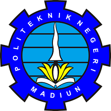

Jalan Serayu Nomor 84 Madiun Kode Pos 63133
Telp. (0351) 452970 Fax. (0351) 452960
Website: www.pnm.ac.id
| Nama Mahasiswa | : | Bagus Dananjaya |
| Nim | : | 253307045 |
| Jurusan | : | Teknik |
| Program Studi | : | Teknologi Informasi |
| No | Kode MK | Mata Kuliah | SKS | Kelas | Dosen Pengampu |
|---|---|---|---|---|---|
| 1 | MK2201 | Agama Islam | 2 | 2B | Dr. Nanik Nurhayati, S.Ag., M.Pd. |
| 2 | TI2202 | Pemrograman Mobile 1 | 2 | 2B | Sigit Kariagil Bimnugroho, S.Kom., M.T. |
| 3 | TI2203 | Praktik Pemrograman Mobile 1 | 2 | 2B | Sigit Kariagil Bimnugroho, S.Kom., M.T. |
| 4 | TI2204 | Manajemen Resiko Proyek | 2 | 2B | Luthfiyah Dewi Setia, S.Kom., M.Kom. |
| 5 | TI2205 | Pemrograman Berbasis Objek | 2 | 2B | Ihwan Badiwol Sumarta, S.Kom., M.Kom. |
| 6 | TI2206 | Praktik Pemrograman Berbasis Objek | 2 | 2B | Ihwan Badiwol Sumarta, S.Kom., M.Kom. |
| 7 | TI2207 | Desain & Pemrograman Web | 2 | 2B | Ardian Prima Atmaja, S.Kom., M.Cs. |
| 8 | TI2208 | Praktik Desain & Pemrograman Web | 2 | 2B | Ardian Prima Atmaja, S.Kom., M.Cs. |
| 9 | TI2209 | Sistem Operasi | 2 | 2B | Hendrik Kusbandono, S.Kom., M.Kom. |
| 10 | TI2210 | Praktik Sistem Operasi | 2 | 2B | Hendrik Kusbandono, S.Kom., M.Kom. |
| Jumlah | 20 | ||||
| Mahasiswa, | Madiun, 3 Februari 2023 Dosen Pembina Akademik, |
Bagus Dananjaya NIM: 253307045 |
Gus Nanang Syaifuddin, S.Kom., M.Kom. NIDN: 0714088904 |